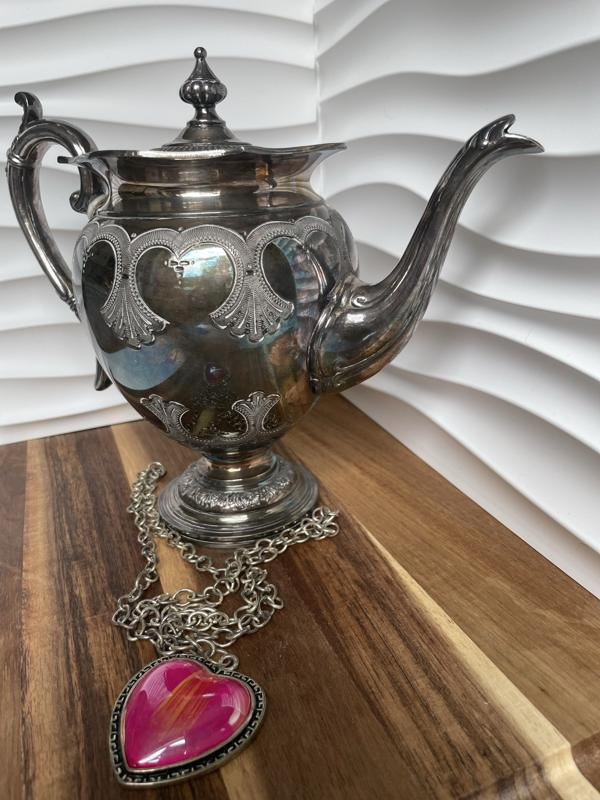
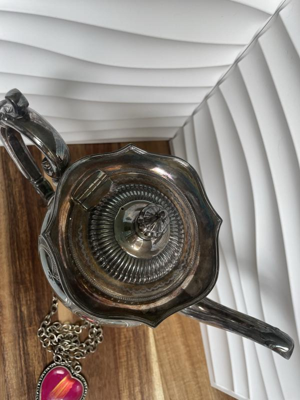
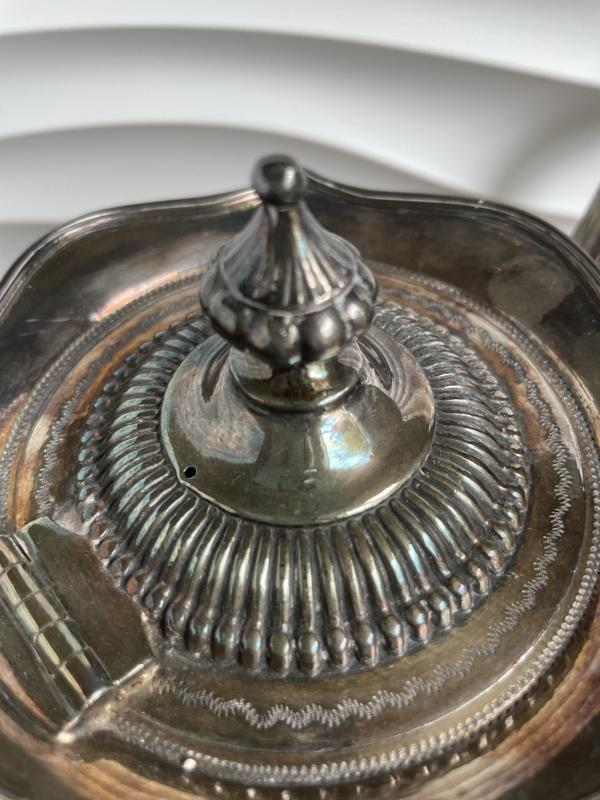
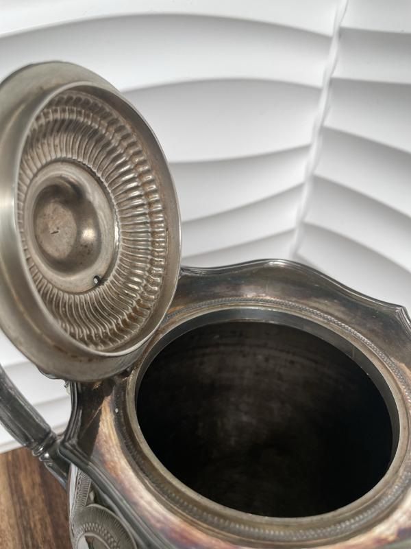
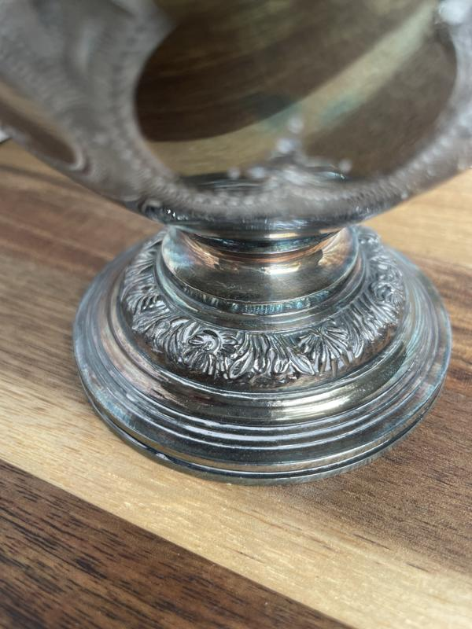
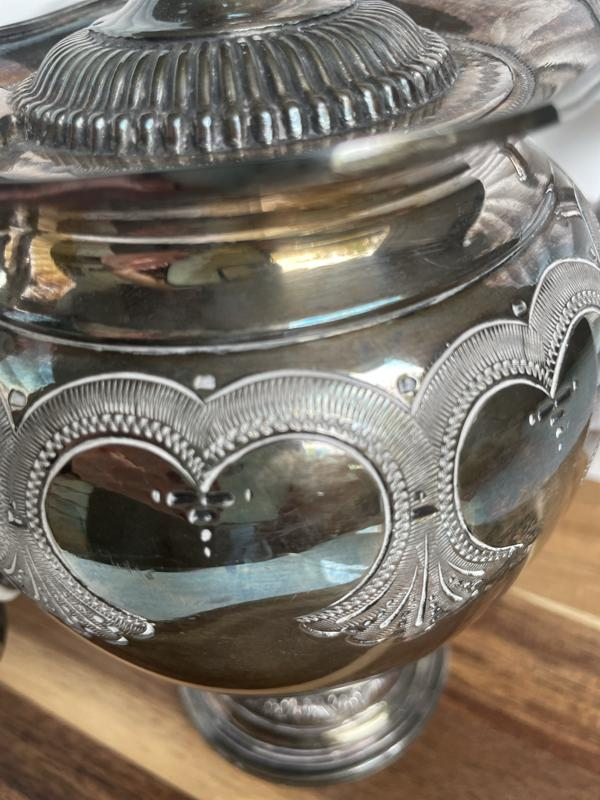
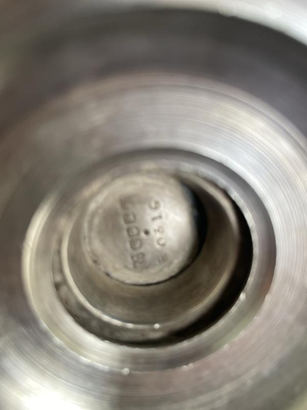
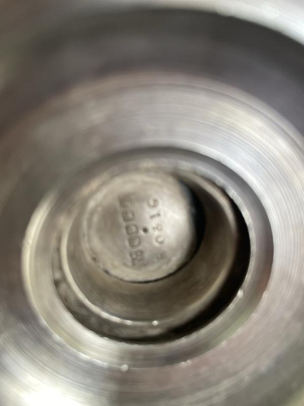
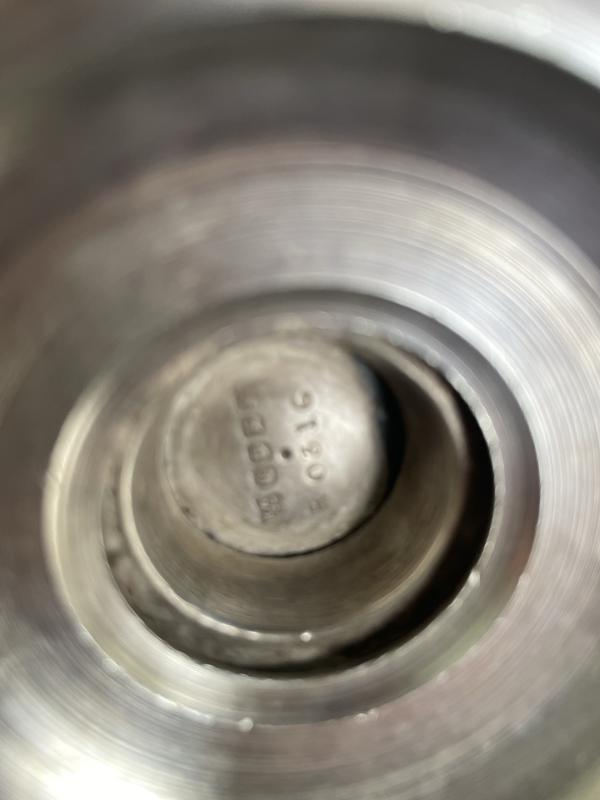

A rustic pewter bowl, simple yet full of timeless charm.
Its soft patina speaks of years gone by, making it a perfect decorative or functional piece.
Dimensions: 25 × 25 cm
Condition: Excellent vintage condition
Antique Silver Candelabra
€50.00
A finely crafted antique silver candelabra with beautiful rustic character.
Ideal as a centerpiece, it bears gentle age marks and light green patina inside, adding to its authenticity.
Height: 25 cm
Condition: Excellent, with natural age marks inside
Victorian Silverplated Teapot







€120.00
A splendid Victorian silverplated teapot, dating to c.1875–1890.
Made by Henry Wilkinson & Co., this teapot carries intricate detailing and graceful proportions.
Dimensions: 17 × 12 cm
Condition: Excellent vintage condition


 
